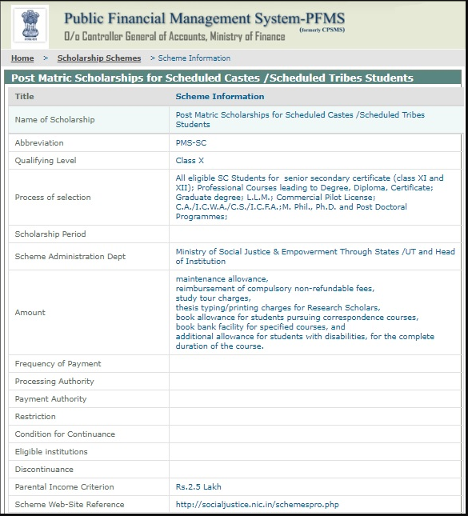

PFMS Scholarship 2020: The Public Financial Management System (PFMS) is a Government of India project that looks after social sector programs. It keeps track of the resources allocated to individuals. The Indian Central Government took this move to guarantee that the cash invested is channeled for the correct intent. PFMS provides applicants with different systems of scholarships.
Students must log on to the PFMS Login Scholarship Portal and upload the records as needed. It is essential that candidates applying for a 2020 PFMS Scholarship meet the qualifying requirements set out in the PMFS Information Bulletin. This assistance scheme is acknowledged in the assistance of scheme scheduling, budgeting and efficient tracking due to deficiencies in the current accounting system. In four countries, namely Madhya Pradesh, Bihar, Mizoram, and Punjab, this scheme was first introduced. PFMS full form is Public Financial Management System. Read more details in this article about the PFMS Scholarship 2020 i.e. pfms.nic.in sc cgagov pfms.
Latest Update:
- Candidates can check their PFMS Scholarship Status 2019-20 by providing the asked details in the Login section. They must provide the Username and password.
- Candidates who are facing problems in registration payment with their Aadhaar card must make sure that their Aadhar Card is active. Since the Inactive Aadhar card is not valid. In order to Activate their Aadhaar card, they must visit their nearest bank to get their Aadhaar card reseeded by NPCI Mapper.
- Check PFMS Status 2019-20 from here.
PFMS Scholarship 2020 List
PFMS Scholarship 2020 to Universities/College Students
PFMS 2020 Post Matric Scholarship for SC Students (pfms nic in sc)

PFMS/DBT Scholarship 2020 Pre-Matric Scholarship for SC Students
PFMS Student Scholarship National Means cum Merit Scholarship
PFMS Scholarship 2020 National Scheme for Incentive for the girl child for secondary education
pfms.in.nic scholarship 2020 Top Class Education Scheme for SC
pfms.nic.in scholarship 2019-20 for UP Gradation of Merit of SC Students (PFMS Scholarship 2020 UP)
pfms.nic.in scholarship for Post-Matric Scholarship for OBCs
PFMS Scholarship Registration 2020
To apply for multiple types of scholarship provided by the Public Financial Management System, the applicant will have to enroll themselves. Application for the PFMS Scholarship 2020 will be a significant component and the applicant will have to provide the necessary information. The PFMS registration login link will be available on PFMS’ official website and the applicant will be required to enter the correct and valid details. The details provided for the successful registration will be the Scholarship Scheme Name, the passing year of Class 12 and the academic details.
The applicant must notify the information of the scholarship they apply for must be applicable and accurate. At the moment of the initial presentation of the application, the data will be cross-checked and if any of the details given are discovered to be invalid or inaccurate, the applicant will not be allowed to access the Scholarship.
The 2020 application of the PFMS Scholarship 2020 must be performed in an internet mode and there will be no other way to access the PFMS application form. To access the Scholarship, candidates will have to enroll themselves effectively. It should be observed that the applicant will be required to meet the eligibility requirements specified for the scholarship for which the applicant is eligible. The information brochure will also be published once the PFMS Scholarship 2020 enrollment portal for applicants is open.
At the time of registration, the bank account number, the IFSC code and the Mobile Number should be kept ready with the applicant. An OTP on the list will be sent by entering a valid phone number. The applicants must select their category. If the category is not discovered, the applicants must select General as their class. Check the name of the candidate in the PFMS Scholarship 2020 Portal list of qualified learners at pfms.nic.in scholarship 2020.
How To Fill Online PFMS Scholarship Application Form 2020?
- Visit the official website of PFMS home page pfms.nic.in
- Click on the section below Click on’ PFMS Scholarship 2020 Student Registration.’
- On the register section, select the system “Scholarship for Universities / College Students.”
- Together with the Education Board from which the applicant entered class 12, select the year of entering class 12.
- Enter the bank account number and bank branch IFSC code.
- Click the menu button, pick the category and press “Search.”
- The system will search for the title and fill in the type presented on the display automatically.
- Enter the mobile number, send an OTP to that code, fill in the OTP socket.
- Click the “Verify” button and enter the email ID. Creating a user ID and password and filling in the captcha code below.
- To complete the method, click on “Submit.”
Documents Required for PFMS Scholarship Registration
Registration Candidates applying for any type of a 2020 PFMS Scholarship Schemes will need to upload the papers while completing the application process and registering for the Scholarship. It must ensure that the right Documents are downloaded in accordance with the information requirements. The downloaded papers must be applied as any discrepancy will prevent the applicant from applying for the 2020 system of PFMS Scholarship. PFMS Scholarship Last Date.
Find the list of papers to be downloaded from below in the PFMS Scholarship 2020
- The candidate’s scanned copy of Passport shaped photo.
- The photograph requirements will be stated in the Official Notice that the applicant will have to go through very closely.
- False photo information will prevent the candidate from uploading the photo.
- Scanned Marksheet copy that is supposed to be in PDF format.
- Scanned The candidate’s signature as per the requirements.
- Copy of the premium receipt scanned in a PDF file
PFMS Scholarship Eligibility Criteria
It will be essential for applicants to ensure that they meet the specified PFMS Scholarship 2020 Scheme eligibility requirements for which they will apply. In the data brochure that will be published by the officials overseeing the Scholarship, the eligibility requirements will be detailed. At the moment of application of the application form, the entry requirements will be checked and if the individual is discovered not to meet the specified requirements, their application will not be approved and the candidate will not be deemed suitable for accessing the scholarship.
The Public Financial Management System provides different types of School-to-College PFMS Scholarships 2020, which makes it essential for the applicant to ensure that they meet the criteria of the scholarship they are applying for. The fields to be filled out are Candidate Name, Mobile Number, E-mail I d, Birth Date, Gender, Category, Education Board, Standard or Class, Result of the Last Year, Marks Obtained, Grade, Institution Name, Parental Income, and Word Verification if involved in any work. Clicking on the show systems button will demonstrate the applicants’ all qualified systems.
- The students should complete class 12th and also be at the top 20% of students.
- Parent’s Annual income should be less than 6 Lakhs per annum.
- The age of the candidate should be between 18 to 25 years and there is no relaxation in this condition.
PFMS Payment Status 2020 – PFMS Know Your Payment Status
Candidates who will receive information on the PFMS Scholarship 2020 Status Check PFMS Online such as application information or the status of the PFMS Student Scholarship can inspect the information of the grant as Payment by Aadhar Number and Account Number Payment (PFMS Bank PFMS Passbook).
PFMS Status 2020 Payment by Aadhar Number
- Enter the necessary domain amount of Aadhar.
- To verify it, enter the Aadhar Number again.
- Candidates must then verify the term.
- They must join the letters as shown in the above picture. (Non-case delicate letters).
- Click the Search button.
PFMS Account Status 2020 Payment by Account Number
- Choose the bank, enter the bank’s first few letters.
- Candidates must then register the number of the account.
- Enter the account number of the candidate.
- Enter the account number of the candidate to verify it again.
- Candidates must then verify the term. They must join the letters as shown in the above picture. (Non-case delicate letters) Click the search button.
PFMS Student Scholarship 2020
PFMS is an Expenditure Department, Department of Finance, Govt, Central Plan Scheme Monitoring System. of India. Public Financial Management System (PFMS) is a subsidy e-payment platform for both Aadhar-based & Non-Aadhar-based loan accounts through NPCI under Direct Benefit Transfer (DBT)
PNB made DBT transfers to the beneficiaries covered by the plan through PFMS 2019-20. The beneficiary must obtain the licensed agency’s PPA (Print Payment Advice) and submit the PPA for transactions at any of our offices.
PFMS Scholarship Renewal
Candidates registered in the PFMS Check 2020 scholarship program will be needed to renew their scholarship by offering the information and qualifications needed in the login chapter. The transfer of the Scholarship is a straightforward method in which the applicant is required to complete their registration after a few easy measures.
The restoration of the 2020 PFMS Scholarship will be essential for applicants who are hoping to access the Scholarship and have retained the academic record needed to be qualified for the renewed scholarship. The renewal of the scholarship will only be available on PFMS ‘ formal portal and there will be no other manner of doing this. It is essential for the applicant to follow the procedure very closely for the implementation of the 2020 PFMS Scholarship
Steps for Renewal PFMS Scholarship 2020
We provide detailed measures for the candidate’s membership in the 2020 PFMS Scholarship for The Public Financial Management System Scholarship. The connection to the update will be given on the PFMS (pfms.nic.in college) formal portal. It is recommended that the applicant must remain up-to-date and must continue to visit the PFMS Portal on a periodic basis for any of the recent releases on the scholarship renewal schedules.
Go through the measures of the 2020 PFMS Scholarship Renewal from the following points.
- Step – 1: The applicant already registered in the 2020 PFMS Scholarship program will have to attend the PFMS-pfms.nic.in formal documents.
- Step – 2: On the page, there will be a connection to the’ PFMS Scholarship 2020 Student Registration.’ Candidates will need to pick the system they are planning to renew.
- Step – 3: Candidates will have to pick the year in which they were or are registered in Class 12 and the board of education.
- Step – 4: The IFSC Code and account amount must be provided by the candidate. Click the search key.
- Step – 5: The scheme will automatically fill out the form if the applicant is already registered by pfms nic.in sc for the 2020 PFMS Scholarship program.
- Step – 6: The applicant must provide the mobile number and the applicant will receive an OTP. Please enter OTP.
- Step – 7: Candidate will need to verify and provide the Email ID.
- Step – 8: The candidate will need to create their User ID and Password in the next phase.
- Step – 9: To submit the Renewal Application form, click on the submit button.
PFMS Scholarship 2020 Important Points
Before continuing to complete the application form to apply for the key industry PFMS scholarship, the applicant must be conscious of a few points. It is essential that when applying for the PFMS Scholarship 2020, the applicant must prevent any type of mistake. It is essential that the candidate should continue to regularly visit the PFMS website.
Go through some of the significant points from below concerning the 2020 PFMS Scholarship:
- The applicant will have to visit the www.pfms.nic.in on a periodic basis to maintain up to date with the recent data about the 2020 PFMS Scholarship program.
- The Scholarship for the Financial System of Public Management (PFMS) offers different scholarships from school to college level.
- Applicants must first log on to the portal of PFMS Scholarship 2020. It will be essential that, while applying, the applicant must provide the right information.
- Before applying for the application form, it is essential for the applicant to have passed through the Information Bulletin in detail.
- The applicant must be conscious of the PFMS Scholarship 2020 eligibility requirements for which they will apply. They will only be allowed to continue for the application form after securing the requirements.
- The details in the application form must be valid and accurate since any type of inaccurate data will prevent the applicant from applying for the scholarship program.
- Candidates will be prepared to verify the position of their application by giving either the Aadhaar Card amount or the Account Number.
- The sum of the 2020 PFMS Scholarship will be transmitted straight to the account of the candidate.
PFMS Scholarship Benefits
The portal for the 2020 PFMS Scholarship is very helpful for learners as it enables to easily disburse the quantity of the grant. The gateway of the 2020 PFMS Scholarship has many helpful characteristics listed below:
- Direct Scholarship Amount Transfer: This gateway sends the quantity of scholarship straight to the learners.
- Time-saving: Students can present their request on the 2020 PFMS Scholarship Portal in 10 minutes and because there is no documentation, the job is performed quickly.
- Automatic Payments: The gateway of the PFMS Scholarship 2020 automates and handles all procedures linked to learners submitting, verifying, handling, sanctioning and disbursing scholarship.
- Easy monitoring: Using their Ids and Passwords, it is very simple for a pupil to monitor their deposit status through this gateway.
- Helpline: The gateway for the 2020 PFMS Scholarship has a helpline that learners can use for any request.
- Scholarship Renewal: Students can easily renew their scholarship via the PFMS scholarship portal because they can use the same ID that they developed to log on to the portal at the start.
- Alerts to learners: regular SMS alerts and emails are sent to learners at the multiple handling phases through this gateway.
- Online help manual for learners: an online help guide is also given to aid fill out the form for students’ comfort.
PFMS Contact Number
Toll-Free Number: 1800 118 111
Email Id: [email protected]
FAQ’s on PFMS Scholarship
Question 1.
Can I create one deposit on pfms.nic.in sc for various kinds of beneficiaries?
Answer:
No, you can only pay at one moment for a single sort of Beneficiary.
Question 2.
Where can I access Excel’s Approved Payment Beneficiary List?
Answer:
E-Payment – Download data about the payment from pfms.nic.in sc.
Question 3.
Where can I verify a beneficiary’s deposit?
Answer:
You use the Payment Periodicity check to see if a beneficiary is due for payment.
Question 4.
What is PFMS Scholarship?
Answer:
PFMS Means Public Financial Management System (PFMS), Public Financial Management System (PFMS) is a platform for e-payment of subsidy under Direct Benefit Transfer (DBT) to both Aadhar based & Non- Aadhar based bank accounts through NPCI.
Question 5.
What is PFMS payment?
Answer:
PFMS stands for Public Financial Management System and is a platform for e-payment of subsidy under Direct Benefit Transfer (DBT) to both Aadhar based & Non- Aadhar based bank accounts through NPCI (National Payments Corporation of India.
Question 6.
How can I get PFMS Scholarship?
Answer:
- The students should complete class 12th and also be at the top 20% of students.
- Parent’s Annual income should be less than 6 Lakhs per annum.
- The age of the candidate should be between 18 to 25 years and there is no relaxation in this condition.
Question 7.
How can I check my PFMS Status or PFMS Scholarship?
Answer:
- Go to the PFMS website by the following URL which is under below https://pfms.nic.in/NewDefaultHome.aspx.
- In HOMEPAGE you will find the Know Your Payments link.
- Once you click on Know your Payments link you will find PFMS Scholarship Status.
You can also find more Scholarship Articles for 12th passed, 10th passed Students and many more